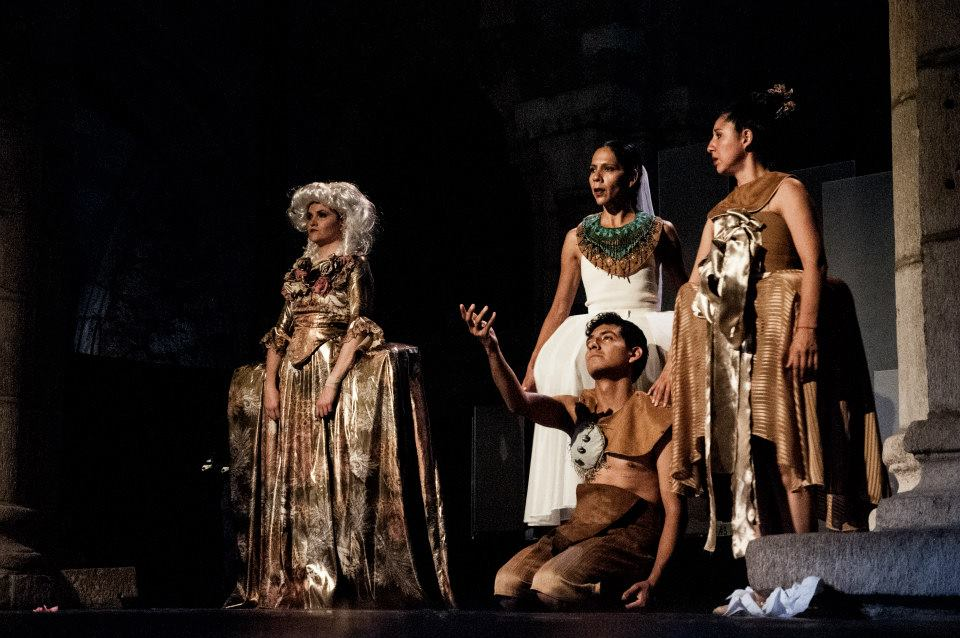
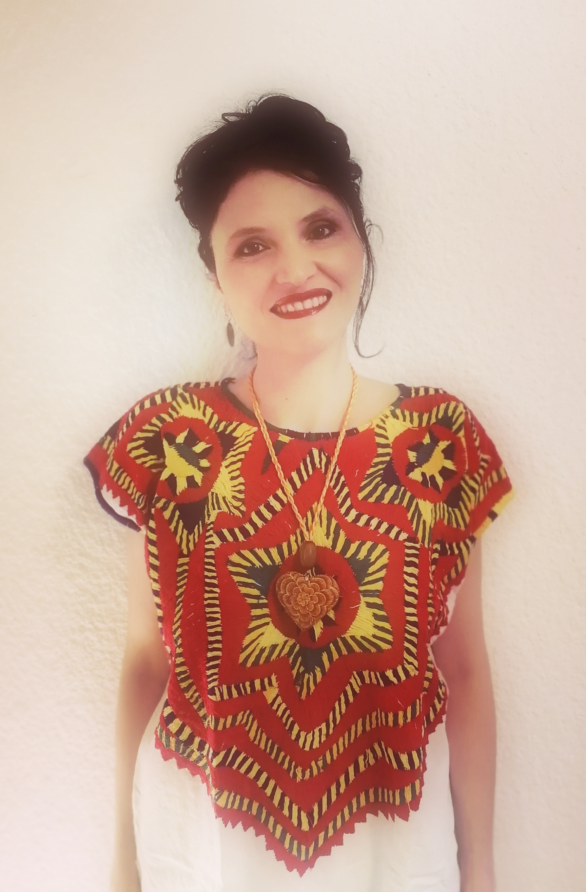
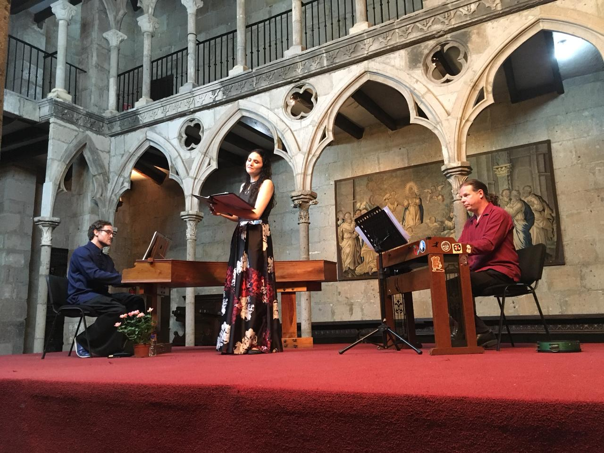
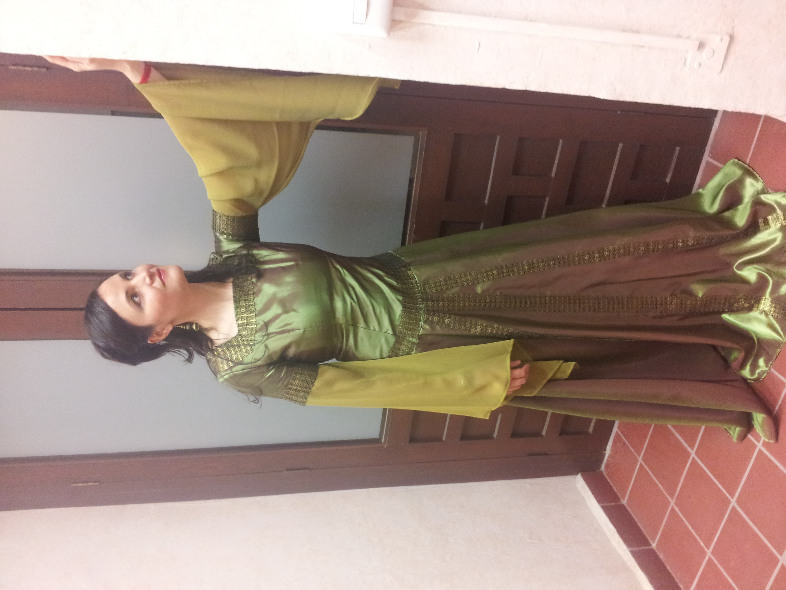

Mezzosoprano · Mexico
Nurani
Huet
Voz antigua en el mundo contemporaneo.
Cantata, Opera, Oratorio y Musica Medieval.
Descubrir
Mezzosoprano · Mexico
Voz antigua en el mundo contemporaneo.
Cantata, Opera, Oratorio y Musica Medieval.

Fotografia de concierto
Trayectoria
Mezzosoprano egresada del Conservatorio Nacional de Musica de Mexico, Nurani Huet amplio su formacion en el Koninklijk Conservatorium de La Haya, Paises Bajos, bajo la guia de Peter van Heyhgen, Eric Mentzel, Jill Feldman y Maria Acda.
Graduada de la especialidad Medieval Music Research and Performance en Medieval Music Besalu y la Universitat de Lleida, Espana, su trayectoria como solista se ha concentrado en la Cantata, la Opera y el Oratorio del Barroco, asi como en la Musica Medieval.
Ha cantado en los principales recintos de Mexico y en ciudades de Francia, Espana, Lituania y Paises Bajos. Ha colaborado con ensambles como Cappella Barroca de Mexico, Armonicus Cuatro, Equinox Project (Francia) y Liminar.
Durante nueve anos estuvo al frente del Taller de Musica Antigua para cantantes en el Conservatorio Nacional de Musica. Actualmente es integrante del Coro de Madrigalistas del INBAL, tutora de la Academia de Musica Antigua de la UNAM y titular del Taller de Musica Medieval en la Facultad de Musica.
Presencia internacional
Mexico
Francia
Espana
Lituania
Paises Bajos
Repertorio
Cantata Barroca
Repertorio
Musica Medieval
Repertorio
Opera
Repertorio
Oratorio
Proyecto propio
Fundado por Nurani Huet, Medieval MX es un proyecto artistico y academico dedicado a la interpretacion, investigacion y difusion en Mexico de los repertorios tardomedievales y renacentistas tempranos.
La iniciativa recupera musicas de los siglos XII al XVI y las lleva a escenarios contemporaneos con rigor historico y sensibilidad viva, acercando el pasado sonoro a nuevos publicos.


Galeria






Contacto
Para contrataciones, colaboraciones artisticas,
proyectos academicos o prensa: